सुविकल्प: Mine Repurposing Tool
Select factors and sub-factors to discover suitable repurposing options for your mining site
![Coal Controller Organisation emblem]()
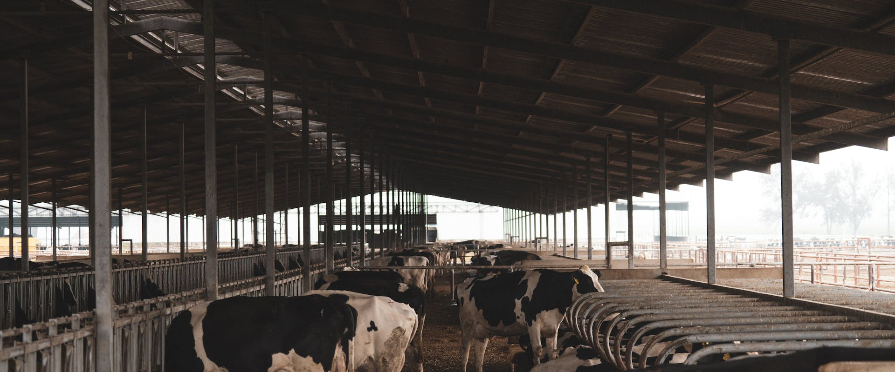
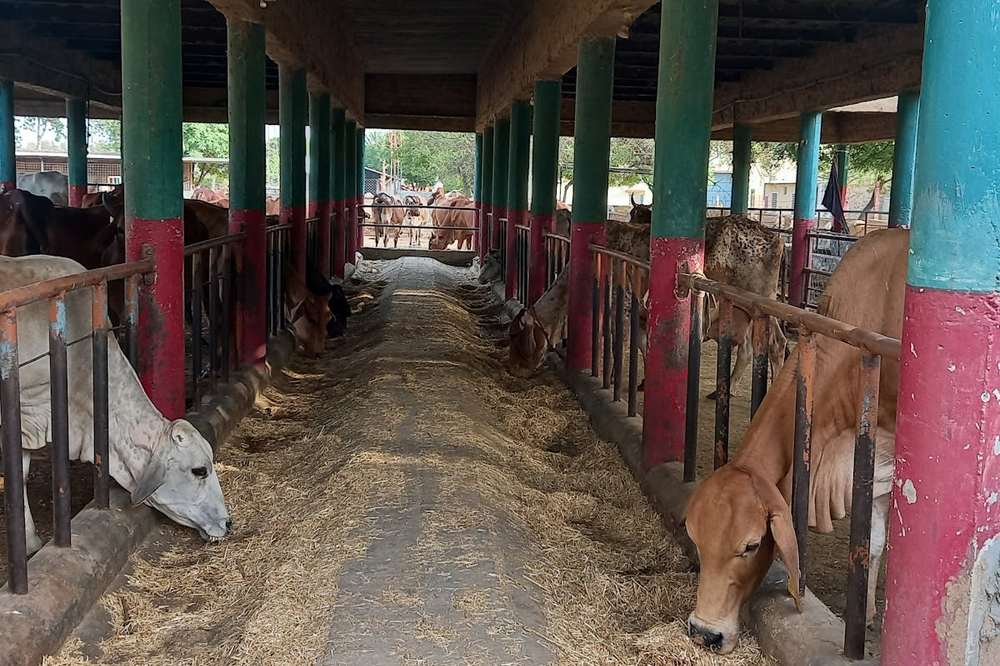
Project overview, strategic rationale, site suitability assessment, and indicative dairy scale and configuration matrix for closed coal mine areas.
The following matrix provides a structured checklist for assessing the suitability of the proposed site for the selected repurposing option. It identifies the key physical, technical, environmental, infrastructure, legal, and owner-side readiness parameters that should be reviewed before the project is advanced to the next stage of development. The purpose of this matrix is to help the project owner understand existing site conditions, technical requirements, potential constraints, and preparatory actions required before feasibility studies, approvals, or tendering are initiated.
| Category | What to Assess | Why It Matters |
|---|---|---|
| Land Status | Closure status, ownership, permissible post-mining use | Legal viability for dairy, fodder and infrastructure |
| Land Safety | Subsidence, slope stability, backfilled area stability, unsafe zones | Cattle, workers and infrastructure safety |
| Soil Condition | Fertility, pH, heavy metals, contamination screening | Critical for fodder safety and indirect milk safety |
| Water Availability | Drinking water for cattle, cleaning, fodder irrigation | Dairy requires assured water for animal health and hygiene |
| Fodder Potential | Green fodder, dry fodder, silage, Napier / maize / legume potential | Feed availability determines dairy viability |
| Climate | Temperature, humidity, rainfall, heat stress risk | Affects animal productivity and shed design |
| Pollution Risk | Dust, emissions, fly ash, contaminated runoff | Milk quality, animal health and food safety |
| Veterinary Access | Nearest veterinary hospital, AI centre, vaccination access | Required for animal health, breeding and productivity |
| Milk Market Access | Dairy cooperative, milk union, processor, chilling centre distance | Determines revenue and procurement viability |
| Community Proximity | SHGs, FPOs, land-losers, dairy farmers, unemployed youth | Livelihood integration and beneficiary participation |
| Access & Roads | Milk transport route, feed transport, tanker movement | Essential for daily milk movement |
| Power Supply | Milking machines, chilling, lighting, pumps, processing | Required for hygiene and value addition |
The following matrix presents an indicative relationship between available site area, project scale, technical configuration, and likely development potential. It is intended to support preliminary planning by helping the project owner identify the appropriate scale and configuration for the proposed repurposing option. The values and recommendations are indicative and should be refined through detailed feasibility studies, site surveys, engineering assessments, and relevant technical and commercial evaluations.
| Land Area | Scale | Configuration | Use Case |
|---|---|---|---|
| 1–5 ha | Pilot dairy livelihood unit | 20–50 milch animals, cattle shed, milk collection point, small fodder patch, training unit | Proof of concept / CSR pilot |
| 5–20 ha | Community dairy cluster | 50–200 milch animals, fodder plots, silage pit, bulk milk cooler, SHG operations | SHG / FPO livelihood |
| 20–50 ha | Integrated dairy-fodder landscape | 200–500 milch animals, organised fodder cultivation, milk chilling, dung composting / biogas, veterinary support | Cluster-level economy |
| 50–100 ha | Dairy park / milk value-chain zone | 500–1,000 milch animals, fodder bank, chilling centre, processing unit, training centre, biogas / manure unit | PPP / CSR / cooperative model |
| 100 ha+ | Regional dairy-fodder ecosystem | Multi-zone cattle units, fodder production, chilling, processing, biogas / CBG, training, rural enterprise zone | Just-transition flagship |
Implementation options for dairy, comparative assessment of delivery models, and model-wise responsibility logic for mine-owner and partners.
The following table outlines the possible implementation models that may be considered for developing the proposed repurposing project. These models differ in terms of ownership structure, funding responsibility, private sector participation, operational control, and long-term risk allocation. The purpose of this table is to help the project owner compare broad development routes and select an implementation approach that aligns with its financial capacity, institutional preference, risk appetite, and long-term asset management objectives.
| Model | Suitability | Best Use Case |
|---|---|---|
| EPC | Moderate | Basic cattle sheds, fencing, water systems, fodder plots, milk collection room and civil infrastructure |
| EPC + O&M / FM | High | Owner-controlled welfare dairy with outsourced animal care, fodder management, milk handling and SHG support |
| BOOT | High | Commercial dairy / milk processing with eventual asset transfer to mine owner |
| DBFOT | High | Large dairy parks, chilling, processing, value-added dairy and biogas infrastructure financed by private party |
| Concession / Lease-Develop-Operate | Very High | Community-linked dairy enterprise with contractual local employment and SHG / FPO / cooperative participation |
| Hybrid | Very High | Mine-owner land + CSR + govt schemes + dairy cooperative + private operator + community institutions |
The following comparative assessment evaluates the major implementation models across key decision parameters such as investment requirement, ownership control, financing responsibility, contractual complexity, risk transfer, and long-term economic benefit. This matrix is intended to support early-stage decision-making by highlighting the relative strengths and limitations of each model. The final choice of model should be guided by the specific circumstances of the project, including its scale, commercial viability, applicable policy framework, and the owner's institutional preference.
| Parameter | EPC+O&M | BOOT | DBFOT | Concession/Lease | Hybrid |
|---|---|---|---|---|---|
| Upfront investment by owner | High–Moderate | Low–Moderate | Low–Moderate | Low–Moderate | Variable |
| Suitability for welfare objective | Very High | High if mandated | High | Very High | Very High |
| Suitability for SHG / FPO integration | High | Moderate | High if required | Very High | Very High |
| Revenue potential | Moderate–High | High | High | Moderate–High | Variable–High |
| O&M burden on owner | Moderate | Low | Low | Low–Moderate | Shared |
| Commercial bankability | Low–Moderate | Moderate–High | High | Moderate–High | Variable |
| Overall suitability for Dairy | High | High | High | Very High | Very High / Most Suitable |
The following table explains how major project responsibilities are typically allocated under different implementation models. It covers key functional areas such as site availability, financing, design and construction, regulatory approvals, operation and maintenance, revenue collection, asset ownership, and end-of-term transfer. This helps clarify the respective roles of the project owner, private developer, EPC contractor, operator, or concessionaire, and supports the preparation of tender documents and contractual structures.
| Responsibility Area | EPC+O&M | BOOT | DBFOT | Concession/Lease | Hybrid |
|---|---|---|---|---|---|
| Land provision | Mine owner | Mine owner | Mine owner | Mine owner | Mine owner |
| CAPEX | Mine owner | Developer | Concessionaire | Operator / Cooperative | Shared (owner + private + CSR + govt) |
| Cattle procurement | Contractor (managed) | Developer | Concessionaire | Operator / Cooperative | Shared |
| Animal care & O&M | Contractor | Developer | Concessionaire | Operator / Cooperative | Shared |
| Milk marketing | Contractor / Owner | Developer | Concessionaire | Operator / Cooperative | Cooperative / Private partner |
| SHG / Livelihood integration | Owner (mandated in contract) | Optional | Optional / conditional | Contractually mandated | Contractually mandated |
| Revenue to owner | Nil / management fee | Lease + revenue share | Concession fee | Lease + revenue share | Multiple streams |
| Risk bearing | Owner bears most risk | Developer | Concessionaire | Shared | Distributed across partners |
Funding logic, revenue generation by model, livelihood and jobs comparison, and combined revenue-profitability-livelihood assessment for dairy.
The following table presents the broad funding logic for each implementation model. It explains who is expected to finance the project, the level of owner-side funding requirement, and the commercial rationale behind each structure. This section is intended to help the project owner assess whether the project is more suitable for owner-funded development, private investment, public-private partnership, lease or concession structure, or a hybrid funding arrangement.
| Model | Funding Source | Suitability for Dairy |
|---|---|---|
| EPC / EPC+O&M | Mine owner budget, mine closure fund, CSR | Suitable for basic cattle sheds, fencing, water points, milk room, fodder plots and training facility |
| BOOT | Private developer capital + possible CSR / VGF / grant | Suitable for commercial dairy production, chilling, processing, packaging and asset transfer |
| DBFOT | Private concessionaire + public / CSR support + possible VGF | Suitable for large dairy parks with chilling, processing, branding, training and biogas units |
| Concession / Lease | Private operator / dairy cooperative / FPO / SHG federation / NGO / blended finance | Very suitable for community-linked dairy with livelihood obligations, lease fee and local employment |
| Hybrid | Mine owner + CSR + govt schemes + dairy cooperative + private operator + SHG / FPO + NGO + grants | Most suitable for balancing livelihood, milk value-chain, circular economy and owner revenue participation |
The following table explains how revenue may be generated under different implementation models and identifies who is likely to receive the principal project income. It also describes the nature and extent of the financial benefit available to the project owner, whether through direct project revenue, cost savings, lease income, concession fees, revenue sharing, service charges, or eventual asset transfer. This comparison is intended to support the selection of a commercially appropriate model for the proposed repurposing project.
The following table assesses the likely local livelihood and employment potential of each implementation model. It considers the extent to which each model can support construction-phase jobs, long-term operational employment, local procurement opportunities, skill development, community participation, and associated support services. This section is particularly relevant where the repurposing project is expected to contribute to post-mining or post-operational economic transition and sustained local community benefit.
| Model | Livelihood Impact | Job Creation Potential | SHG / FPO Integration | Ranking |
|---|---|---|---|---|
| Hybrid | Highest — multiple community roles built in | High — animal care, fodder, milk, dung, training, biogas | Contractually mandated; cooperative + SHG + FPO | ★ Best |
| Concession / Lease | High — community operators as primary stakeholder | High — operator is cooperative / SHG federation / FPO | Core to model design | ★ Best |
| EPC + O&M | High if welfare obligations mandated in contract | Moderate–High — depends on contract clauses | Possible if stipulated by owner | ★★ Good |
| DBFOT | Moderate–High depending on conditions set | Moderate — commercial focus; community clause needed | Possible with conditions in RFP | ★★ Conditional |
| BOOT | Moderate — commercial orientation may limit community scope | Moderate — employment at commercial dairy scale | Limited unless mandated | ★★★ Cautious |
| EPC only | Low post-construction — no ongoing operator obligation | Low — limited to construction phase | None | ★★★★ Least |
The following combined comparison brings together three important dimensions of project structuring: revenue potential, owner-side financial benefit, and local livelihood generation. It provides a consolidated view of how each implementation model performs across commercial, institutional, and community-development perspectives. This matrix is intended to support balanced decision-making where the objective extends beyond financial return to include sustainable site reuse and long-term local economic benefit.
| Dimension | EPC+O&M | BOOT | DBFOT | Concession/Lease | Hybrid |
|---|---|---|---|---|---|
| Revenue to owner | Low (cost centre) | Moderate (lease + rev share) | Moderate–High | Moderate (lease fee) | High (multiple streams) |
| Profitability / commercial viability | Moderate | High | High | Moderate–High | Variable–High |
| Livelihood impact | High (if mandated) | Moderate | Moderate–High | Very High | Very High |
| Community equity participation | Low | Low | Low–Moderate | High | Very High |
| Circular economy integration | Moderate | Moderate | Moderate–High | High | Very High |
| Overall balance score | Moderate | Moderate–High | High | High | Highest |
Pre-RFP preparation checklist, post-award activity scope, and indicative implementation pathway for dairy-based mine repurposing.
The following section identifies the key owner-side preparatory actions that should ideally be completed before issuing the first Request for Proposal. These actions are aimed at reducing uncertainty for prospective bidders, improving project bankability, clarifying site availability, identifying approval pathways and risks, and defining the technical and commercial scope of the project. Completing these preparatory steps before tendering can improve bid quality, attract credible responses, and reduce the risk of delays during project implementation.
Before issuing an RFP for a dairy-based mine repurposing project, the mine owner should prepare the following in priority order:
The following section lists the principal activities that may be undertaken by the selected contractor, developer, concessionaire, operator, or implementation agency after award of the project. These activities generally include detailed site investigations, engineering design, statutory submissions and approvals, equipment procurement, construction, commissioning, operational planning, staff training, and performance monitoring. The distinction between pre-RFP owner preparedness and post-award implementation responsibilities helps ensure an appropriate and efficient allocation of effort across the project development cycle.
After award, the selected concessionaire / contractor / O&M agency / dairy operator can take up the following activities in chronological order:
The following implementation pathway presents a practical high-level sequence for advancing the proposed repurposing concept from initial approval through to project execution and long-term operation. It outlines the broad stages of concept approval, preliminary studies, model selection, bid preparation, procurement, detailed design, statutory approvals, construction, commissioning, and ongoing operation. This pathway is indicative and should be adapted to reflect the specific complexity, regulatory requirements, financing structure, and site conditions applicable to the project.
Way forward recommendations, key references, and abbreviations for dairy-based mine repurposing projects.
The following way forward summarizes the preferred development approach for the proposed repurposing option, based on the assessment presented in PRISM (Post Mining Repurposing Implementation and Strategy Models). It identifies the most suitable implementation models in order of preference, highlights key technical and due-diligence considerations, and outlines the recommended next steps and broad development logic. This section is intended to guide internal decision-making and support the project owner in progressing from concept-stage evaluation toward feasibility assessment, project structuring, regulatory approvals, and implementation planning.
Preferred Models, in order: (1) Hybrid Model, (2) Concession / Lease-Develop-Operate, (3) EPC + O&M / Facility Management, (4) DBFOT
Why preferred: Hybrid is preferred because dairy projects need land, fodder, veterinary services, producer participation and market procurement. The hybrid mix should include mine-owner land + SHG / FPO dairy producers + cooperative / private dairy buyer + veterinary and fodder support agency.
Secondary option: BOOT may be used where commercial chilling, processing and eventual asset transfer are desired.
Suggestable technical care: Fodder availability, water quality, animal housing, veterinary support, chilling, disease control, waste management, biogas, market procurement and animal welfare must be planned.
Recommended development logic: Start with a dairy-fodder livelihood cluster and milk collection / chilling facility. Add processing, biogas and branded products only after supply and procurement are stable.
Disclaimer — All repurposing interventions proposed under P.R.I.S.M. shall remain subject to applicable mining laws, land-use regulations, environmental approvals, mine-closure conditions, forest and biodiversity regulations, groundwater permissions, and any other statutory approvals as may be applicable. Land ownership is proposed to remain with the mine owner / competent authority unless otherwise permitted under applicable law.
| Abbreviation | Full Form |
|---|---|
| AI | Artificial Insemination |
| BMC | Bulk Milk Cooler |
| BOOT | Build-Own-Operate-Transfer |
| CBG | Compressed Biogas |
| CMPFO | Coal Mines Provident Fund Organisation |
| CSR | Corporate Social Responsibility |
| DAHD | Department of Animal Husbandry and Dairying |
| DBFOT | Design-Build-Finance-Operate-Transfer |
| DPR | Detailed Project Report |
| EPC | Engineering, Procurement and Construction |
| FM | Facility Management |
| FPO | Farmer Producer Organisation |
| FSSAI | Food Safety and Standards Authority of India |
| GOBARdhan | Galvanising Organic Bio-Agro Resources Dhan |
| MoC | Ministry of Coal |
| NDDB | National Dairy Development Board |
| NLM | National Livestock Mission |
| NRLM | National Rural Livelihoods Mission |
| O&M | Operation and Maintenance |
| PESO | Petroleum and Explosives Safety Organisation |
| RFP | Request for Proposal |
| SHG | Self Help Group |
| SPCB | State Pollution Control Board |
| VGF | Viability Gap Funding |
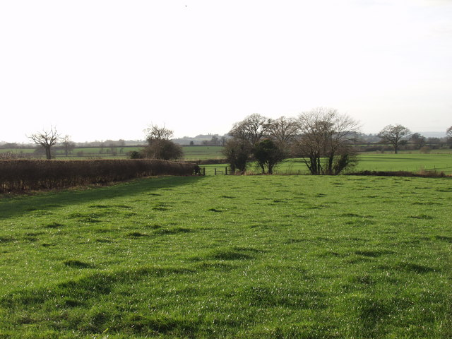
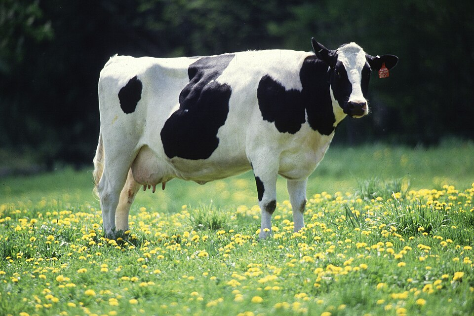
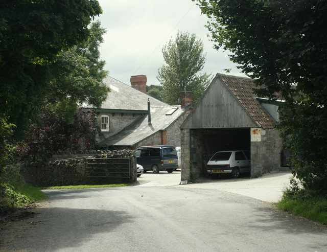
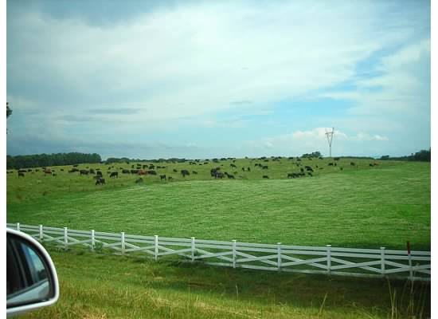
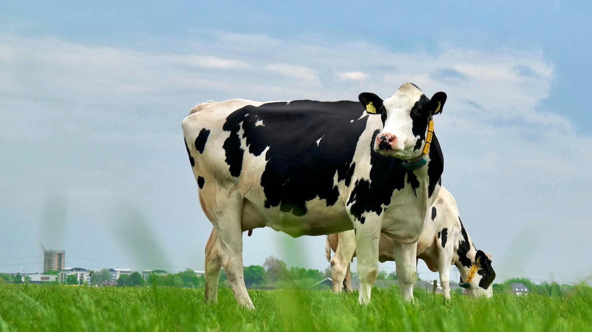
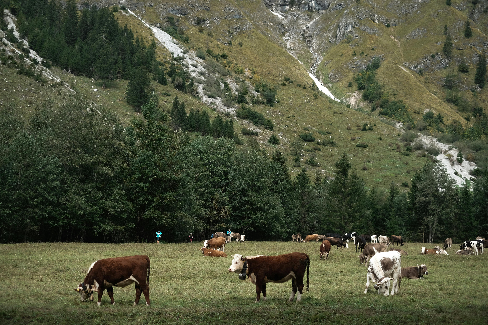
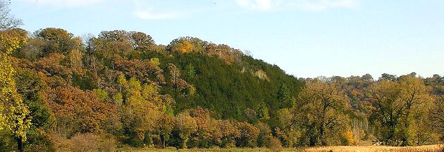
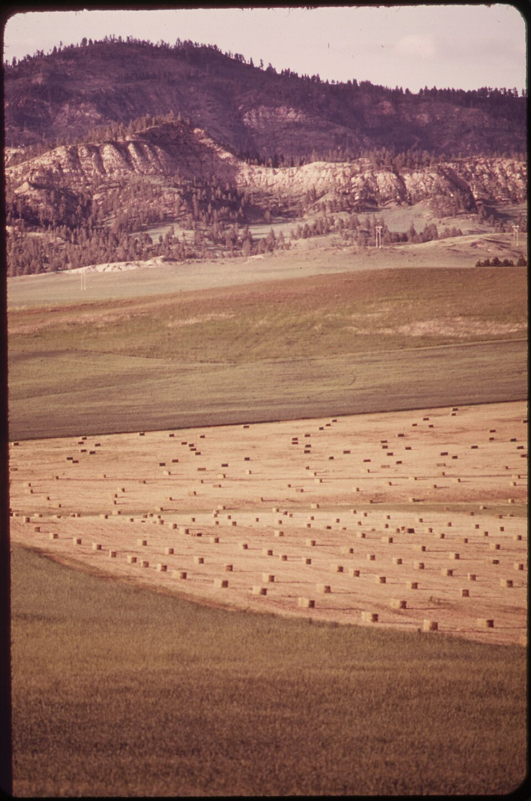
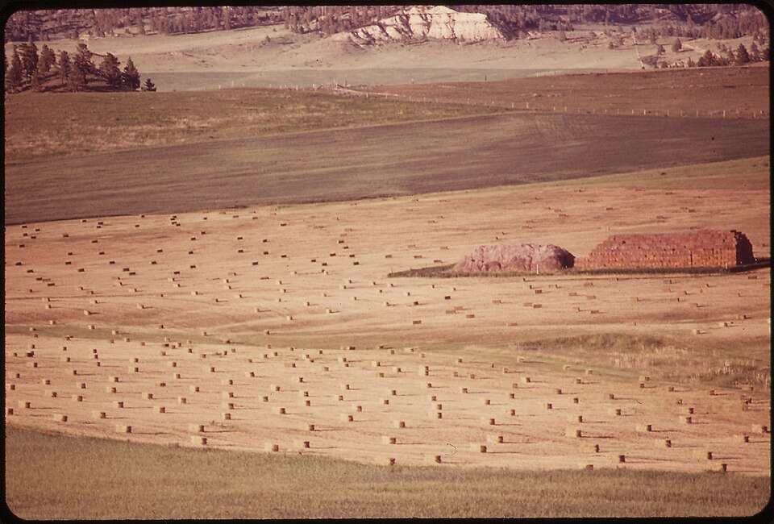
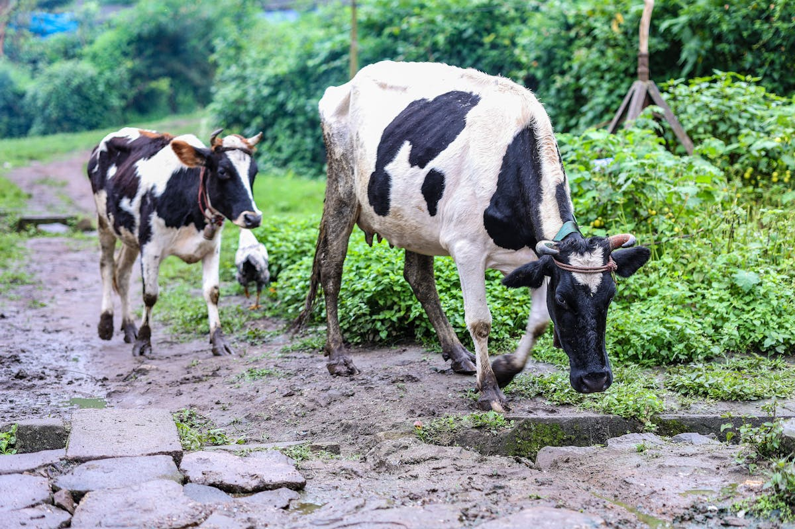
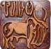
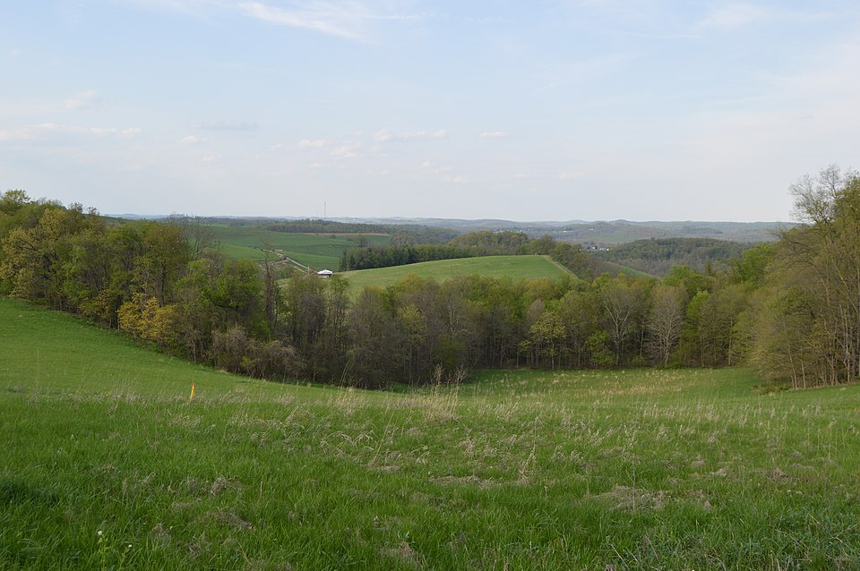
Links open external websites. Coal Controller Organisation does not endorse third-party content.


.jpeg)
Disclaimer: Inclusion of an agency on this list does not constitute endorsement, empanelment, or recommendation by the Coal Controller Organisation or the Ministry of Coal, Government of India. Mine owners and project proponents are advised to conduct their own due diligence process before engaging any agency.
Specialist in dairy cattle breeding, reproduction science, and dairy farm development at ICAR, with expertise in improving herd productivity and establishing viable dairy operations.
Consultant specialising in dairy product development, milk processing operations, and end-to-end dairy plant establishment for both greenfield and brownfield projects.
Disclaimer: Inclusion of an expert does not constitute endorsement, empanelment, or recommendation by the Coal Controller Organisation or the Ministry of Coal, Government of India. Users are advised to independently verify credentials and suitability before engaging any individual.